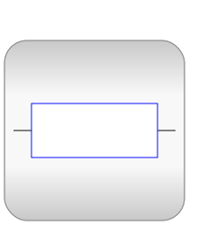
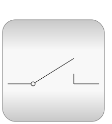

This package hosts models for quasi stationary single phase circuits. Quasi stationary theory for single phase circuits can be found in the references.
| Name | Description |
|---|---|
| Test examples | |
|  Basic | Basic components for AC singlephase models |
|  Ideal | Ideal components for AC singlephase models |
| AC singlephase sensors | |
| AC singlephase sources | |
| Interfaces for AC singlephase models | |
| Library with auxiliary models for testing |